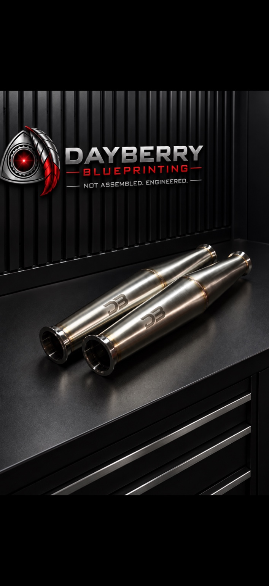
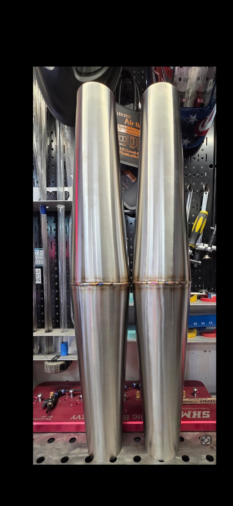
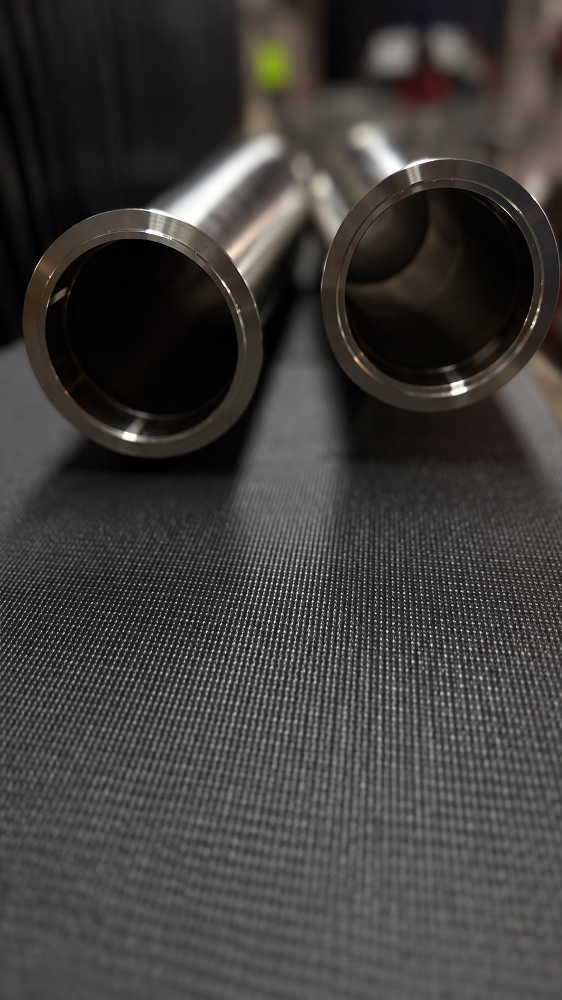
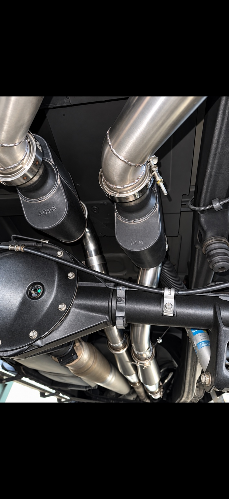

LAMINAR30
Not a conventional muffler. A different approach to the character of your exhaust.
Designed through real-world development on a modified GMC Sierra 5.3L, using opposing stainless cones to shape exhaust tone and throttle-lift behavior.



Condition the pulse. Keep the character.
Distinctive sound
The modified Sierra test platform produces an aggressive, crisp exhaust character under throttle.
Throttle-lift behavior
On the tested configuration, the audible exhaust sound settles rapidly after throttle lift with minimal rasp.
Crafted in stainless
16-gauge stainless cones, TIG welding, and back-purged fabrication.
Actual parts. Actual testing.
The Laminar30 was developed through multiple exhaust configurations on a 2018 GMC Sierra with a BTR Stage 2 cam, retained VVT and long-tube headers.

Hear the Laminar30
01 · Outside WOT + throttle blips
Outside acceleration footage with original exhaust audio. Video upload pending.
02 · Dyno WOT + idle
Dyno acceleration and idle sound demonstration. Video upload pending.
03 · Quick RPM sweep
Original exhaust recording. The MP4 must be uploaded to play.
Fuel economy snapshot
Displayed average fuel economy over the last 31 miles on the Sierra test platform.
These are dashboard readings, not a controlled before-and-after measurement of Laminar30 fuel economy.

Original dashboard image prepared and awaiting upload to the website.
Dual Laminar30 Pair
| Construction | 16-gauge stainless |
| Welding | TIG / back-purged |
| Inlet / outlet | 3″ / 3″ |
| Maximum diameter | 5″ |
| Approx. body length | 29″ |
| Approx. total length | 30″ each |
| Mounting | Custom fitment |
Laminar30 pair
Shipping additional. Confirm current availability, hardware included, and installation requirements before ordering.
Contact button opens Instagram; a verified Dayberry Blueprinting profile link is needed before directing it to your account.